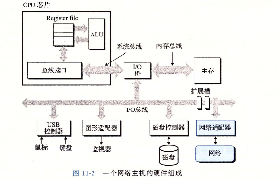
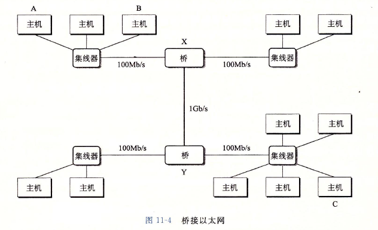
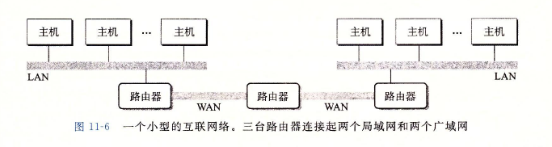
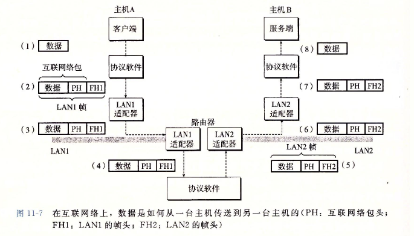
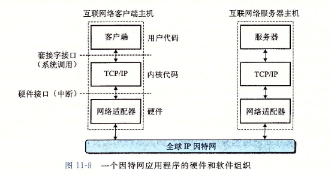
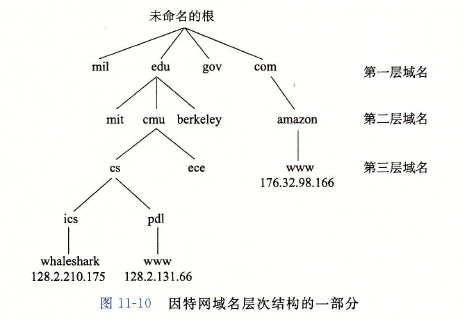
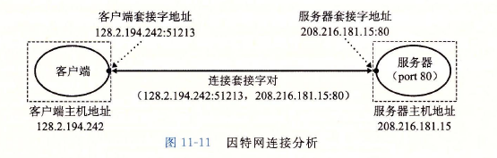
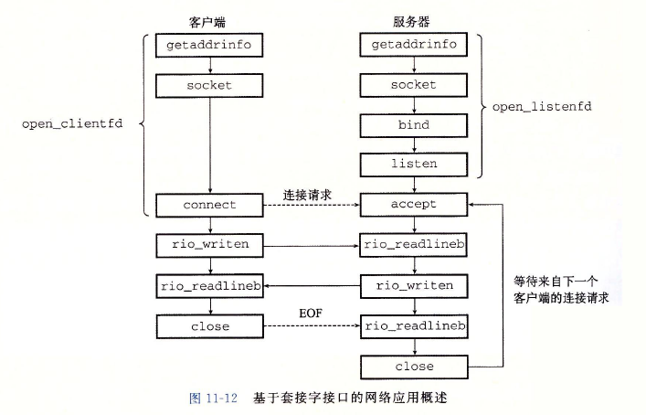
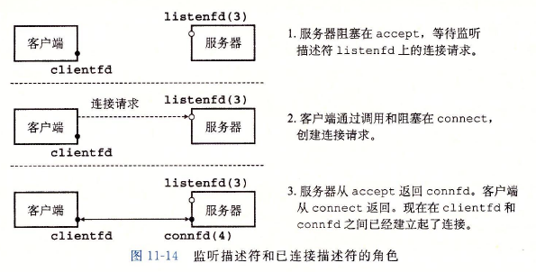

11.1 客户端一服务器编程模型
每个网络应用都是基于客户端一服务器模型的。采用这个模型，一个应用是由一个服务器进程和一个或者多个客户端进程组成。服务器管理某种资源，并且通过操作这种资源来为它的客户端提供某种服务。
认识到客户端和服务器是进程，而不是常提到的机器或者主机，这是很重要的。一台主机可以同时运行许多不同的客户端和服务器，而且一个客户端和服务器的事务可以在同一台或是不同的主机上。无论客户端和服务器是怎样映射到主机上的，客户
端一服务器模型都是相同的。
11.2 网络
对主机而言，网络只是又一种I/O设备，是数据源和数据接收方，如图11-2所示。一个插到I/O总线扩展槽的适配器提供了到网络的物理接口。从网络上接收到的数据从适配器经过I/O和内存总线复制到内存，通常是通过DMA传送。相似地，数
据也能从内存复制到网络。

物理上而言，网络是一个按照地理远近组成的层次系统。最低层是LAN(Local AreaNetwork，局域网)，在一个建筑或者校园范围内。迄今为止，最流行的局域网技术是以太网(Ethernet)。
一个以太网段(Ethernet segment)包括一些电缆(通常是双绞线)和一个叫做集线器的小盒子，如图11-3所示。以太网段通常跨越一些小的区域，例如某建筑物的一个房间或者一个楼层。每根电缆都有相同的最大位带宽，通常是100Mb/s或者
1Gb/s。一端连接到主机的适配器，而另一端则连接到集线器的一个端口上。集线器不加分辨地将从一个端口上收到的每个位复制到其他所有的端口上。因此，每台主机都能看到每个位。

每个以太网适配器都有一个全球唯一的48位地址，它存储在这个适配器的非易失性存储器上。一台主机可以发送一段位(称为帧(frame))到这个网段内的其他任何主机。每个帧包括一些固定数量的头部(header)位，用来标识此帧的源和目的地
址以及此帧的长度，此后紧随的就是数据位的有效载荷(payload)。每个主机适配器都能看到这个帧，但是只有目的主机实际读取它。
使用一些电缆和叫做网桥(bridge)的小盒子，多个以太网段可以连接成较大的局域网，称为桥接以太网(bridged Ethernet)，如图11-4所示。桥接以太网能够跨越整个建筑物或者校区。在一个桥接以太网里，一些电缆连接网桥与网桥，而
另外一些连接网桥和集线器。这些电缆的带宽可以是不同的。在我们的示例中，网桥与网桥之间的电缆有1Gb/s的带宽，而四根网桥和集线器之间电缆的带宽却是100Mb/s。

网桥比集线器更充分地利用了电缆带宽。利用一种聪明的分配算法，它们随着时间自动学习哪个主机可以通过哪个端口可达，然后只在有必要时，有选择地将帧从一个端口复制到另一个端口。
在层次的更高级别中，多个不兼容的局域网可以通过叫做路由器(router)的特殊计算机连接起来，组成一个Internet(互联网络)。每台路由器对于它所连接到的每个网络都有一个适配器(端口)。路由器也能连接高速点到点电话连接，这是称
为WAN ( Wide-Area Network，广域网)的网络示例，之所以这么叫是因为它们覆盖的地理范围比局域网的大。一般而言，路由器可以用来由各种局域网和广域网构建互联网络。例如，图11-6展示了一个互联网络的示例，3台路由器连接了一对局域
网和一对广域网。

互联网络至关重要的特性是，它能由采用完全不同和不兼容技术的各种局域网和广域网组成。每台主机和其他每台主机都是物理相连的，为了能够让某台源主机跨过所有这些不兼容的网络发送数据位到另一台目的主机，通过一层运行在每台主机和路
由器上的协议软件，消除不同网络之间的差异。这个软件实现一种协议，这种协议控制主机和路由器如何协同工作来实现数据传输。这种协议必须提供两种基本能力:
命名机制。不同的局域网技术有不同和不兼容的方式来为主机分配地址。互联网络协议通过定义一种一致的主机地址格式消除了这些差异。每台主机会被分配至少一个这种互联网络地址(Internet address)，这个地址唯一地标识了这台主机。
传送机制。在电缆上编码位和将这些位封装成帧方面，不同的联网技术有不同的和不兼容的方式。互联网络协议通过定义一种把数据位捆扎成不连续的片(称为包)的统一方式，从而消除了这些差异。一个包是由包头和有效载荷组成的，其中包头
包括包的大小以及源主机和目的主机的地址，有效载荷包括从源主机发出的数据位。
图11-7展示了主机和路由器如何使用互联网络协议在不兼容的局域网间传送数据的一个示例。这个互联网络示例由两个局域网通过一台路由器连接而成。一个客户端运行在主机A上，主机A与LAN1相连，它发送一串数据字节到运行在主机B上的服务器
端，主机B则连接在LAN2上。这个过程有8个基本步骤:
- 运行在主机A上的客户端进行一个系统调用，从客户端的虚拟地址空间复制数据到内核缓冲区中。
- 主机A上的协议软件通过在数据前附加互联网络包头和LAN1帧头，创建了一个LAN1的帧。互联网络包头寻址到互联网络主机B。LAN1帧头寻址到路由器。然后它传送此帧到适配器。注意，LAN1帧的有效载荷是一个互联网络包，而互联网络包
的有效载荷是实际的用户数据。这种封装是基本的网络互联方法之一。
- LAN1适配器复制该帧到网络上。
- 当此帧到达路由器时，路由器的I_AN1适配器从电缆上读取它，并把它传送到协议软件。
- 路由器从互联网络包头中提取出目的互联网络地址，并用它作为路由表的索引，确定向哪里转发这个包，在本例中是LAN2。路由器剥落旧的LAN1的帧头，加上寻址到主机B的新的LAN2帧头，并把得到的帧传送到适配器。
- 路由器的LAN2适配器复制该帧到网络上。
- 当此帧到达主机B时，它的适配器从电缆上读到此帧，并将它传送到协议软件。
- 最后，主机B上的协议软件剥落包头和帧头。当服务器进行一个读取这些数据的系统调用时，协议软件最终将得到的数据复制到服务器的虚拟地址空间。

11.3 全球IP因特网
图11-8展示了一个因特网客户端一服务器应用程序的基本硬件和软件组织。

基本上每台因特网主机都运行实现TCP/IP协议(Transmission Control Protocol/InternetProtocol，传输控制协议/互联网络协议)的软件。因特网的客户端和服务器混合使用套接字接口函数和Unix I/O函数来进行通信。通常将套接字函数实
现为系统调用，这些系统调用会陷人内核，并调用各种内核模式的TCP/IP函数。
TCP/IP实际是一个协议族，其中每一个都提供不同的功能。例如，IP协议提供基本的命名方法和递送机制，这种递送机制能够从一台因特网主机往其他主机发送包，也叫做数据报(datagram)。 IP机制从某种意义上而言是不可靠的，因为，如果数
据报在网络中丢失或者重复，它并不会试图恢复。UDP ( Unreliable Datagram Protocol，不可靠数据报协议)稍微扩展了IP协议，这样一来，包可以在进程间而不是在主机间传送。TCP是一个构建在IP之上的复杂协议，提供了进程间可靠的全
双工(双向的)连接。
从程序员的角度，我们可以把因特网看做一个世界范围的主机集合，满足以下特性:
- 主机集合被映射为一组32位的IP地址。
- 这组IP地址被映射为一组称为因特网域名(Internet domain name)的标识符。
- 因特网主机上的进程能够通过连接(connection)和任何其他因特网主机上的进程通信。
11.3.1 Ip地址
一个IP地址就是一个32位无符号整数。网络程序将IP地址存放在如图11-9所示的IP地址结构中。
————————————————————————————————————————————————————————————code/netp/netpfragments.c
/*IP address structure*/
strut in_addr{
uint32_t s_addr; /*Address in network byte order (big-endian)*/
};
————————————————————————————————————————————————————————————code/netp/netpfragments.c
图11-9 IP地址结构
因为因特网主机可以有不同的主机字节顺序，TCP/ IP为任意整数数据项定义了统一的网络字节顺序(network byte order)(大端字节顺序)。在IP地址结构中存放的地址总是以(大端法)网络字节顺序存放的，即使主机字节顺序(host byte order)
是小端法。Unix提供了下面这样的函数在网络和主机字节顺序间实现转换。
#include
uint32_t htonl(uint32_t hostlong);
uintl6_t htons(uintl6_t hostshort)
返回:按照网络字节顺序的值。
uint32_t ntohl(uint32_t netlong);
uintl6_t ntohs(unitl6_t netshort);
返回:按照主机字节顺序的值。
hotnl函数将32位整数由主机字节顺序转换为网络字节顺序。ntohl函数将32位整数从网络字节顺序转换为主机字节。htons和ntohs函数为16位无符号整数执行相应的转换。注意，没有对应的处理64位值的函数。
IP地址通常是以一种称为点分十进制表示法来表示的，这里，每个字节由它的十进制值表示，并且用句点和其他字节间分开。例如，128.2.194.242就是地址。x8002c2f2的点分十进制表示。在 Linux系统上，你能够使用HOSTNAME命令来确定你
自己主机的点分十进制地址:
linux> hostname -i
128.2.210.175
应用程序使用inet_pton和ine_ntop函数来实现IP地址和点分十进制串之间的转换。
#include
int inet_pton(AF_INET, const char *src，void *dst);
返回:若成功则为1，若src为非法点分十进制地址则为0，若出错则为-1,
const char *inet ntop(AF_INET, const void *src，char *dst，socklen_t size);
返回:若成功则指向点分十进制字符串的指针，若出错则为NULL,
在这些函数名中，"n"代表网络，"p"代表表示。它们可以处理32位IPv4地址(AF_INET)(就像这里展示的那样)，或者128位IPv6地址(AF_INET6)。
inet_pton函数将一个点分十进制串(src)转换为一个二进制的网络字节顺序的IP地址(dst)。如果src没有指向一个合法的点分十进制字符串，那么该函数就返回0。任何其他错误会返回-1，并设置errno。相似地，inet_ntop函数将一个二进制的
网络字节顺序的IP地址(src)转换为它所对应的点分十进制表示，并把得到的以null结尾的字符串的最多size个字节复制到ds七。
11.3.2 因特网域名
因特网客户端和服务器互相通信时使用的是IP地址。然而，对于人们而言，大整数是很难记住的，所以因特网也定义了一组更加人性化的域名(domain name)，以及一种将域名映射到IP地址的机制。域名是一串用句点分隔的单词(字母、数字和破折
号)，例如whaleshark.ics.cs.cmu.edue。
域名集合形成了一个层次结构，每个域名编码了它在这个层次中的位置。通过一个示例你将很容易理解这点。图11-10展示了域名层次结构的一部分。层次结构可以表示为一棵树。树的节点表示域名，反向到根的路径形成了域名。子树称为子域
(subdomain)。层次结构中的第一层是一个未命名的根节点。下一层是一组一级域名((first-level domain name)，由非营利组织ICANN(Internet Corporation for Assigned Names and Numbers,因特网分配名字数字协会)定义。常见的
第一层域名包括 com, edu. gov. org和net。

下一层是二级(second-level)域名，例如cmu. edu，这些域名是由ICANN的各个授权代理按照先到先服务的基础分配的。一旦一个组织得到了一个二级域名，那么它就可以在这个子域中创建任何新
的域名了，例如cs.cmu.edu。
因特网定义了域名集合和IP地址集合之间的映射。这个映射是通过分布世界范围内的数据库(称为DNS ( Domain Name System，域名系统))来维护的。从概念上而言，DNS数据库由上百万的主机条目
结构(host entry structure)组成，其中每条定义了一组域名和一组IP地址之间的映射。从数学意义上讲，可以认为每条主机条目就是一个域名和IP地址的等价类。我们可以用Linux的NSLOOKUP程
序来探究DNS映射的一些属性，这个程序能展示与某个IP地址对应的域名。
每台因特网主机都有本地定义的域名工。calhost，这个域名总是映射为回送地址(loopback address)127.0.0.1:
linux> nslookup localhost
Address:127.0.0.1
localhost名字为引用运行在同一台机器上的客户端和服务器提供了一种便利和可移植的方式，这对调试相当有用。我们可以使用HOSTNAME来确定本地主机的实际域名:
linux> hostname
whaleshark.ics.cs.cmu.edu
在最简单的情况中，一个域名和一个IP地址之间是一一映射:
linux> nslookup whaleshark.ics.cs.cmu.edu
Address:128.2.210.175
然而，在某些情况下，多个域名可以映射为同一个IP地址:
linux> nslookup cs.mit.edu
Address:18.62.1.6
linux> nslookup eecs.mit.edu
Address:18.62.1.6
在最通常的情况下，多个域名可以映射到同一组的多个IP地址:
linux> nslookup www.twitter.com
Address:199.16.156.6
Address:199.16.156.70
Address:199.16.156.102
Address:199.16.156.230
linux> nslookup twitter.com
Address:199.i6.156.102
Address:199.16.156.230
Address:199.i6.156.6
Address:199.16.156.70
最后，我们注意到某些合法的域名没有映射到任何IP地址:
linux> nslookup edu
***Can’t find edu:No answer
linux> nslookup ics.cs.cmu.edu
***Can’t find ics.cs.cmu.edu: No answer
11.3.3 因特网连接
因特网客户端和服务器通过在连接上发送和接收字节流来通信。从连接一对进程的意义上而言，连接是点对点的。从数据可以同时双向流动的角度来说，它是全双工的。并且从(除了一些如粗心的耕锄机操作员切断了电缆引起灾难性的失败以外)由源
进程发出的字节流最终被目的进程以它发出的顺序收到它的角度来说，它也是可靠的。
一个套接字是连接的一个端点。每个套接字都有相应的套接字地址，是由一个因特网地址和一个16位的整数端口组成的，用“地址:端口”来表示。
当客户端发起一个连接请求时，客户端套接字地址中的端口是由内核自动分配的，称为临时端口(ephemeral port)。然而，服务器套接字地址中的端口通常是某个知名端口，是和这个服务相对应的。
一个连接是由它两端的套接字地址唯一确定的。这对套接字地址叫做套接字对(socket pair)，由下列元组来表示:
(cliaddr:cliport , servaddr : servport )
其中cliaddr是客户端的IP地址，cliport是客户端的端口，servaddr是服务器的IP地址，而servport是服务器的端口。

11.4 套接字接口
套接字接口(socket interface)是一组函数，它们和Unix I/O函数结合起来，用以创建网络应用。大多数现代系统上都实现套接字接口，包括所有的Unix变种、Windows
和Macintosh系统。图11-12给出了一个典型的客户端一服务器事务的上下文中的套接字接口概述。当讨论各个函数时，你可以使用这张图来作为向导图。

11.4.1 套接字地址结构
从Linux内核的角度来看，一个套接字就是通信的一个端点。从Linux程序的角度来看，套接字就是一个有相应描述符的打开文件。
因特网的套接字地址存放在如图11-13所示的类型为sockaddr_in的16字节结构中。对于因特网应用，sin_family成员是AF_INET,sin port成员是一个16位的端口号，
而sin_addr成员就是一个32位的IP地址。IP地址和端口号总是以网络字节顺序(大端法)存放的。
————————————————————————————————————————————————————————code/netp/netframents.c
/*IP socket address structure*/
struct sockaddr_ in{
uintl6_t sin_family;/*Protocol family (always AF_INET)*/
uintl6_t sin_port; /*Port number in network byte order*/
struct in_addr sin_addr; /*IP address in network byte order*/
unsigned char sin_zero [8];/*Pad to sizeof(struct sockaddr)*/
};
/*Generic socket address structure (for connect，bind, and accept)*/
struct sockaddr{
uintl6_t sa_family; /*Protocol family*/
char sa_data[14]:/*Address data*/
};
————————————————————————————————————————————————————————code/netp/netframents.c
图11-13 套接字地址结构
connect、bind和accept函数要求一个指向与协议相关的套接字地址结构的指针。套接字接口的设计者面临的问题是，如何定义这些函数，使之能接受各种类型的套接字
地址结构。现在我们可以使用通用的void*指针，但是那时在C中并不存在这种类型的指针。解决办法是定义套接字函数要求一个指向通用sockaddr结构(图11-13)的指针，
然后要求应用程序将与协议特定的结构的指针强制转换成这个通用结构。为了简化代码示例，定义下面的类型:
typedef struct sockaddr SA;
然后无论何时需要将sockaddr_in结构强制转换成通用sockaddr结构时，我们都使用这个类型。
11.4.2 socket函数
客户端和服务器使用socket函数来创建一个套接字描述符(socket descriptor) o
#include
#include
int socket(int domain, int type，int protocol)
返回：若成功则为非负描述符，若出错则为-1.
如果想要使套接字成为连接的一个端点，就用如下硬编码的参数来调用socket函数:clientfd=Socket(AF_INET, SOCK_STREAM, 0);其中，AF_ INET表明我们正在使
用32位IP地址，而SOCK_STREAM表示这个套接字是连接的一个端点。不过最好的方法是用getaddrinf。函数来自动生成这些参数，这样代码就与协议无关了。
11.4.3 connect函数
客户端通过调用connect函数来建立和服务器的连接。
#include
int connect(int clientfd, const struct sockaddr *addr, socklen_t addrlen)
返回:若成功则为0，若出错则为-1,
connect函数试图与套接字地址为addr的服务器建立一个因特网连接，其中addrlen是sizeof(sockaddr in)。connect函数会阻塞，一直到连接成功建立或是发生错误。
如果成功，clientfd描述符现在就准备好可以读写了，并且得到的连接是由套接字对
(x:y, addr.sin_addr:addr.sin_port)
刻画的，其中x表示客户端的IP地址，而Y表示临时端口，它唯一地确定了客户端主机上的客户端进程。对于socket，最好的方法是用getaddrinfo来为connect提供参数
11.4.4 bind函数
剩下的套接字函数bind,listen和accept，服务器用它们来和客户端建立连接。
#include
int bind(int sockfd,const struct sockaddr *addr,socklen_t addrlen):
返回:若成功则为0，若出错则为-1.
bind函数告诉内核将addr中的服务器套接字地址和套接字描述符sockfd联系起来。参数addrlen就是sizeof(sockaddr_in)。对于socket和connect，最好的方法是用
getaddrinf。来为bind提供参数。
11.4.5 listen函数
客户端是发起连接请求的主动实体。服务器是等待来自客户端的连接请求的被动实体。默认情况下，内核会认为socket函数创建的描述符对应于主动套接字(active socket)，
它存在于一个连接的客户端。服务器调用listen函数告诉内核，描述符是被服务器而不是客户端使用的。
#include
int listen(int sockfd, int backlog)
返回:若成功则为0，若出错则为-1.
listen函数将sockfd从一个主动套接字转化为一个监听套接字(listening socket) ,该套接字可以接受来自客户端的连接请求。backlog参数暗示了内核在开始拒绝连接请求
之前，队列中要排队的未完成的连接请求的数量。backlog参数的确切含义要求对TCP/IP协议的理解，这超出了我们讨论的范围。通常我们会把它设置为一个较大的值，比如1024。
11.4.6 accept函数
服务器通过调用accept函数来等待来自客户端的连接请求。
#include
int accept(int listenfd, struct sockaddr *addr，int *addrlen)
返回:若成功则为非负连接描述符，若出错则为-1。
accept函数等待来自客户端的连接请求到达侦听描述符listenfd，然后在addr中填写客户端的套接字地址，并返回一个已连接描述符(connected descriptor)，这个
描述符可被用来利用Unix I/O函数与客户端通信。
监听描述符和已连接描述符之间的区别使很多人感到迷惑。监听描述符是作为客户端连接请求的一个端点。它通常被创建一次，并存在于服务器的整个生命周期。已连接
描述符是客户端和服务器之间已经建立起来了的连接的一个端点。服务器每次接受连接请求时都会创建一次，它只存在于服务器为一个客户端服务的过程中。
图11-14描绘了监听描述符和已连接描述符的角色。在第一步中，服务器调用accept，等待连接请求到达监听描述符，具体地我们设定为描述符3。回忆一下，描述符
0~2是预留给了标准文件的。
在第二步中，客户端调用connect函数，发送一个连接请求到listenfd。第三步，accept函数打开了一个新的已连接描述符connfd(我们假设是描述符4)，在clientfd
和connfd之间建立连接，并且随后返回connfd给应用程序。客户端也从connect返回，在这一点以后，客户端和服务器就可以分别通过读和写clientfd和connfd来回传
送数据了。

12.8 小结
每个网络应用都是基于客户端一服务器模型的。根据这个模型，一个应用是由一个服务器和一个或多个客户端组成的。服务器管理资源，以某种方式操作资源，为它的客
户端提供服务。客户端一服务器模型中的基本操作是客户端一服务器事务，它是由客户端请求和跟随其后的服务器响应组成的。
客户端和服务器通过因特网这个全球网络来通信。从程序员的观点来看，我们可以把因特网看成是一个全球范围的主机集合，具有以下几个属性:
1)每个因特网主机都有一个唯一的32位名字，称为它的IP地址。
2)IP地址的集合被映射为一个因特网域名的集合。
3)不同因特网主机上的进程能够通过连接互相通信。
客户端和服务器通过使用套接字接口建立连接。一个套接字是连接的一个端点，连接以文件描述符的形式提供给应用程序。套接字接口提供了打开和关闭套接字描述符的
函数。客户端和服务器通过读写这些描述符来实现彼此间的通信。